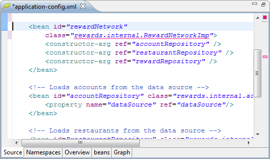
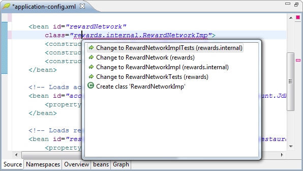
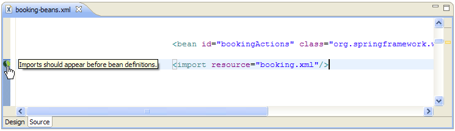

SpringSource Tool Suite builds on top of the Spring IDE configuration editor by providing quick fixes and best practice recommendations.
As you work on Spring XML configuration files, the SpringSource Tool Suite provides as you type error checking. The editor indicates errors with an error marker in the right margin as well as a red line under the element causing the error.

While the cursor is in the area with the red line, the keystrokes CTRL+1 brings up a list of possible solutions.

As you work with Spring XML configuration files, the SpringSource Tool Suite may provide recommendations on how to comply with best practices compiled by expert SpringSource consultants. If a recommendation is available, an icon will appear next to the relevant XML configuration. Hovering over the icon displays a tooltip containing the best practice recommendation.

All recommendations are also available as info messages in the Problems View. Further discussion of best practices are available here.